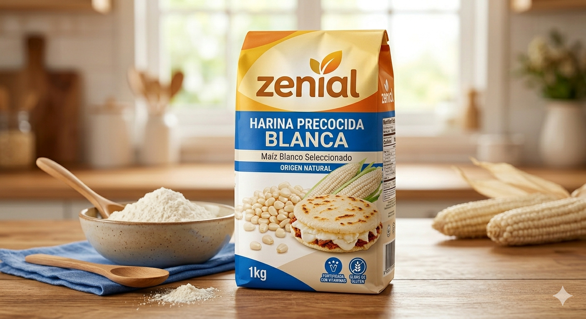
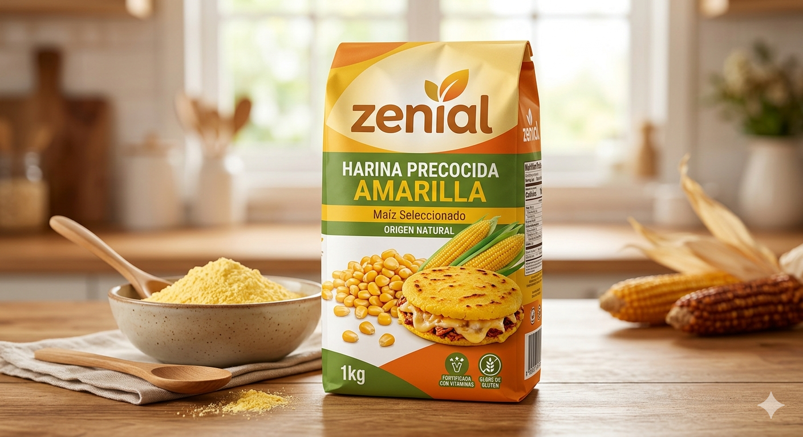
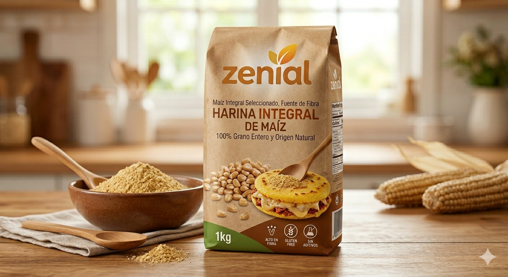
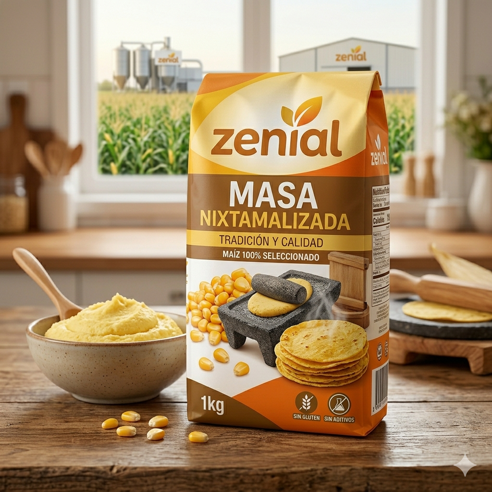
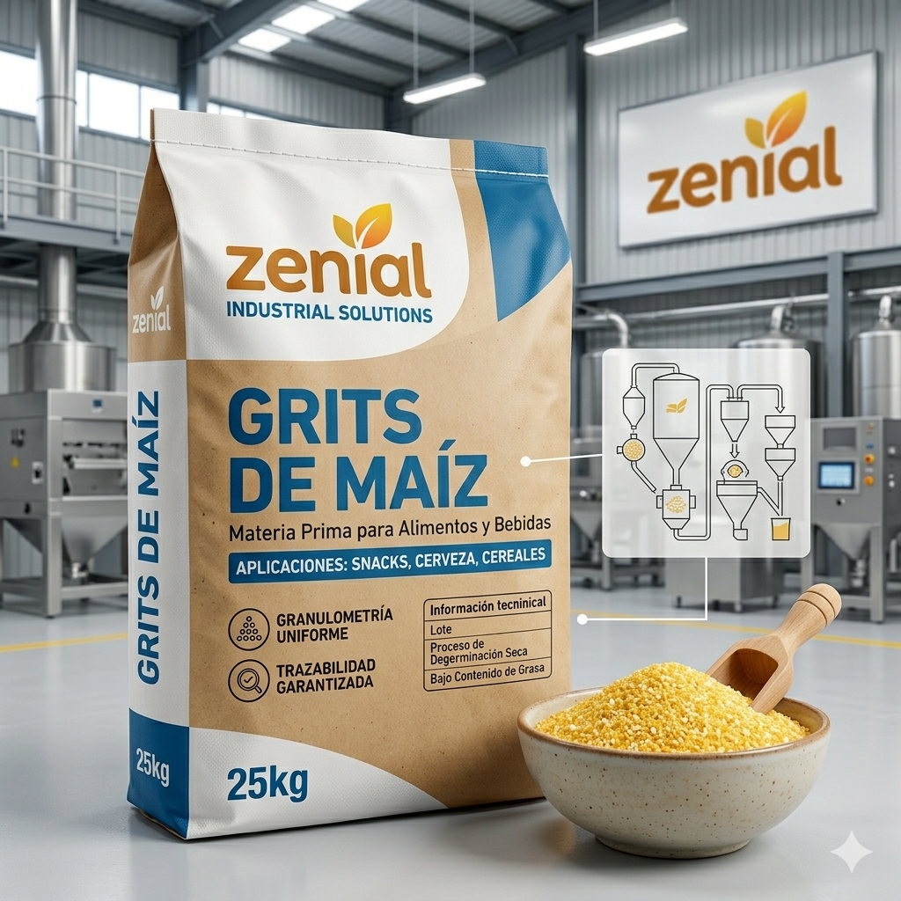
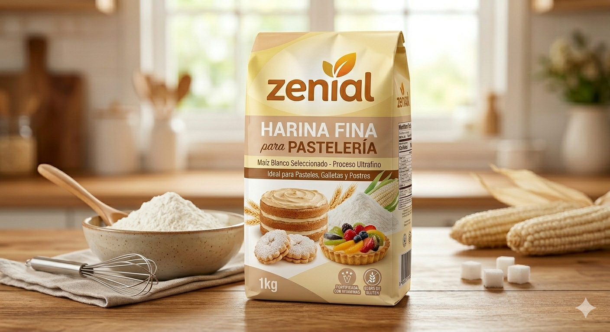

Línea completa de harinas de maíz y derivados con trazabilidad total desde el campo hasta tu mesa.

🥇 Más VendidoElaborada con maíz blanco seleccionado de nuestros cultivos, esta harina precocida ofrece la textura perfecta para arepas, hallacas y tamales. Cocción rápida, sabor auténtico y máxima nutrición.

PremiumCon maíz amarillo de alta calidad, esta harina aporta color vibrante, mayor contenido de betacarotenos y un sabor más intenso. Ideal para preparaciones tradicionales y gourmet.

SaludableMolida con todo el salvado del grano, conserva fibra dietaria, vitaminas del complejo B y minerales esenciales. La opción ideal para consumidores conscientes de su salud.

TradicionalElaborada mediante el ancestral proceso de nixtamalización con cal, que mejora la disponibilidad de niacina, calcio y aminoácidos esenciales. Base perfecta para tortillas y tamales auténticos.

IndustrialSémola gruesa de maíz amarillo para la industria cervecera, snacks y cereales. Granulometría controlada para integración perfecta en líneas de producción automatizadas.

NuevoGranulometría ultra-fina para aplicaciones de repostería y pastelería sin gluten. Proporciona suavidad y ligereza excepcional a tortas, bizcochos y mezclas horneadas premium.
Cada lote pasa por más de 30 controles de calidad antes de llegar al mercado
Trabajamos con distribuidores, cadenas de supermercados e industria alimentaria.
Cuéntanos tus necesidades y
diseñamos la solución ideal para tu negocio.